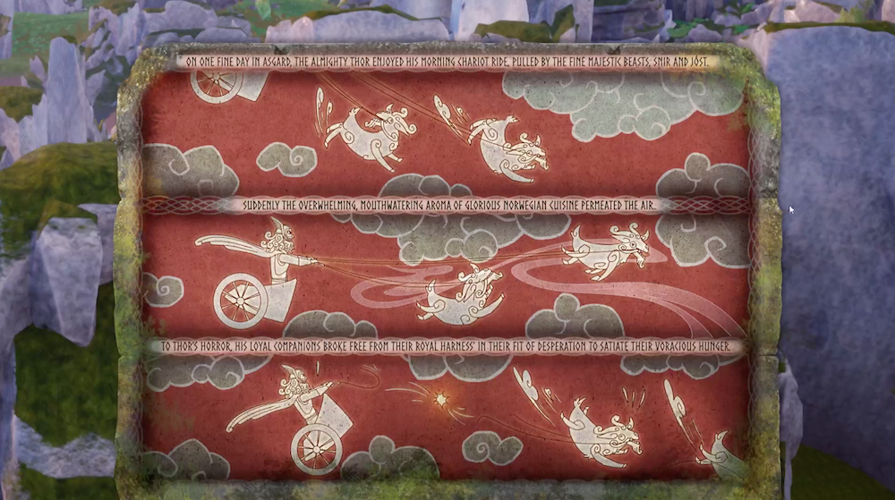
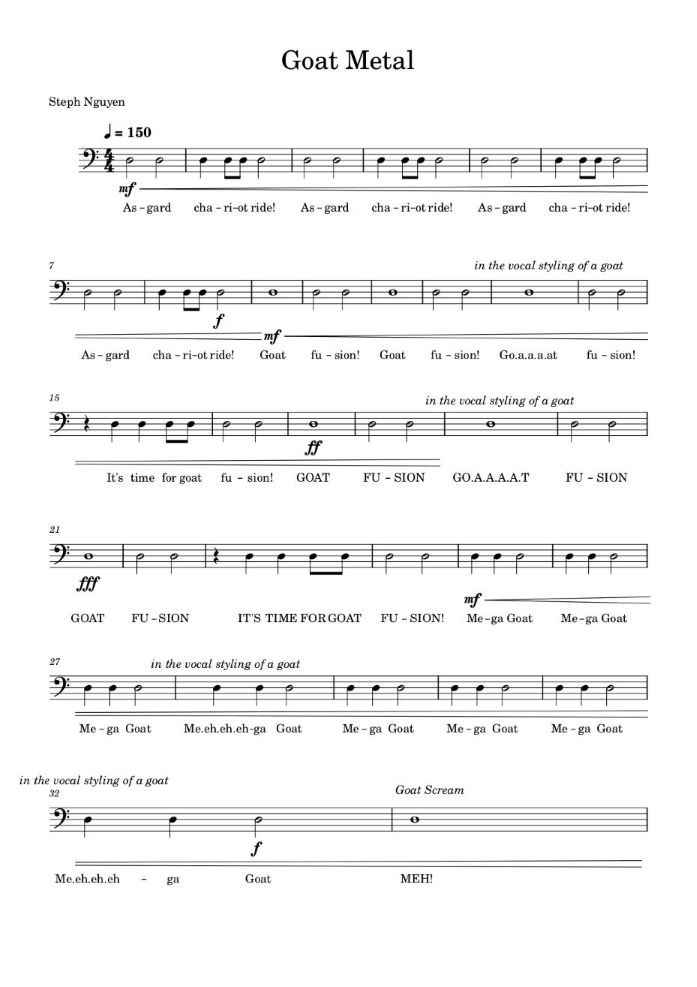

Upon the revelation of the theme "joined together," a unanimous sentiment seemed to sweep through the entire team – the desire to orchestrate the simultaneous control of two characters. One concept centered on players maneuvering two individuals interconnected by a rope, with the aim of guiding tourists away as they follow a parade – a notion playfully influenced by the shared theme park encounters of our team. As we delved deeper, echoes of the on-rails dynamics from Crash Bandicoot's chase sequences resounded. After several rounds of refinement, we eventually settled on a concept featuring twin animals progressing toward a goal while on rails. Their capacity to "join together" and transform into a colossal creature emerged. In an interesting twist of fate, my wife strolled by and enthusiastically exclaimed, "It absolutely has to be a goat!" The team embraced the idea, setting us in motion. And now, the narrative foundation beckons!
Back Story
For this year's GMTK game jam, the team was predominantly working remotely. As fate would have it, our Door Dash orders were prepped and set when the theme was revealed. This seemingly serendipitous occurrence formed the foundation for our game, NorDash. The name "Nordash" is derived from "Nordic Dash," and a single question propelled us into the game-making journey: "How would Thor navigate a pandemic? Could he possibly be a 5 star Door Dash driver, and would you entrust him with your order?" The subsequent events became an indelible chapter in the history of the GMTK game jam!

On one fine day in Asgard, the almighty Thor enjoyed his morning chariot ride, pulled by the fine majestic beasts, Snir and Jóst. Suddenly the overwhelming, mouthwatering aroma of glorious Norwegian cuisine permeated the air. To Thor’s horror, his loyal companions broke free from their royal harness’ in their fit of desperation to satiate their voracious hunger.
The development journey of NorDash remains unforgettable, marking my inaugural game jam experience with Unreal Engine. Despite having utilized Unreal Engine during my professional tenure at Universal Creative, my proficiency was still in the early stages of refinement. There existed numerous areas in which I lacked expertise, and tasks that would have been relatively straightforward in Unity took me at least twice the time in Unreal. This circumstance intensified the challenges of the game jam, as I was determined not to let down the team. Opting for Unreal in this game jam turned out to be a valuable decision, presenting an exceptional opportunity to enhance my Unreal skills. It also compelled me to navigate the demands of crafting a game within 48 hours on an engine that I wasn't entirely at ease with.
Undoubtedly, the most remarkable aspect of this game jam emerges in the form of the amazing heavy metal song fashioned for the menu. I wasn't alone in stepping beyond my comfort zone for this game jam – Steph delved enthusiastically into the realm of heavy metal, even crafting an entire song for the game. Regrettably, we encountered a setback when our intended heavy metal vocalist wasn't able to record the vocals. HOWEVER, he did manage to provide us with a single line, which, surprisingly, was all we required. The outcome? GOAT FUSION!

The Original Music Sheet for NorDash
Lessons Learned
What Went Wrong
Unreal Engine 4
The decision to use Unreal Engine cost the game in the form of polish. Neither myself nor my software partner Yu-Jen were experienced enough in Unreal to build a game in 48 hours.
Playtesting
As a side effect of being slower to deliver in Unreal Engine, the game was not playtested as often as it should have been.
What Went Right
Unreal Engine 4
Despite my Unreal Engine inexperience coming into the game jam, I couldn't be more proud of NorDash. I forced myself out of my comfort zone and accelerated my profficency in Unreal as a result.